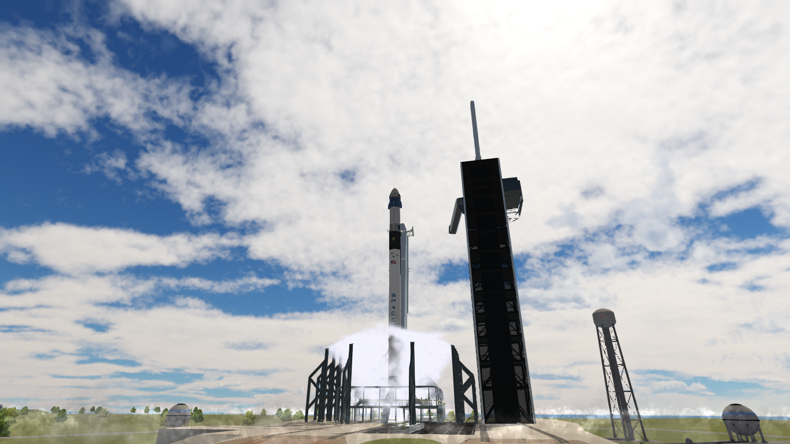
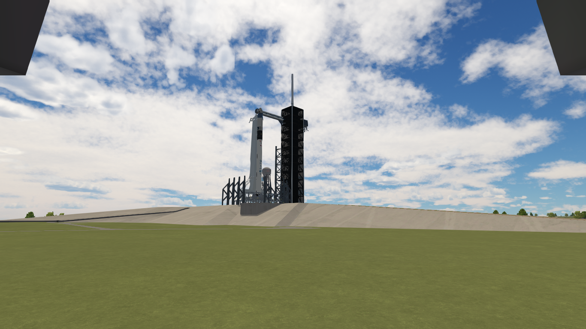
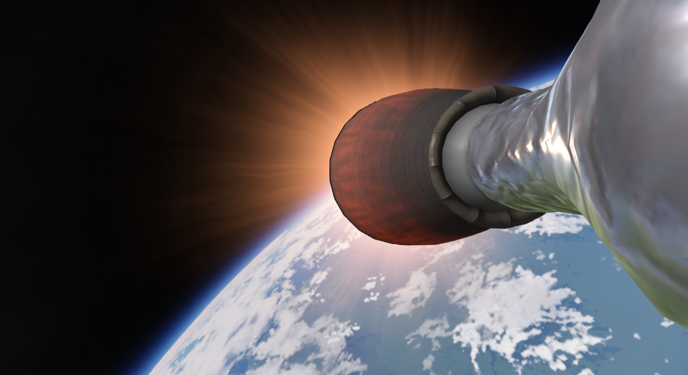
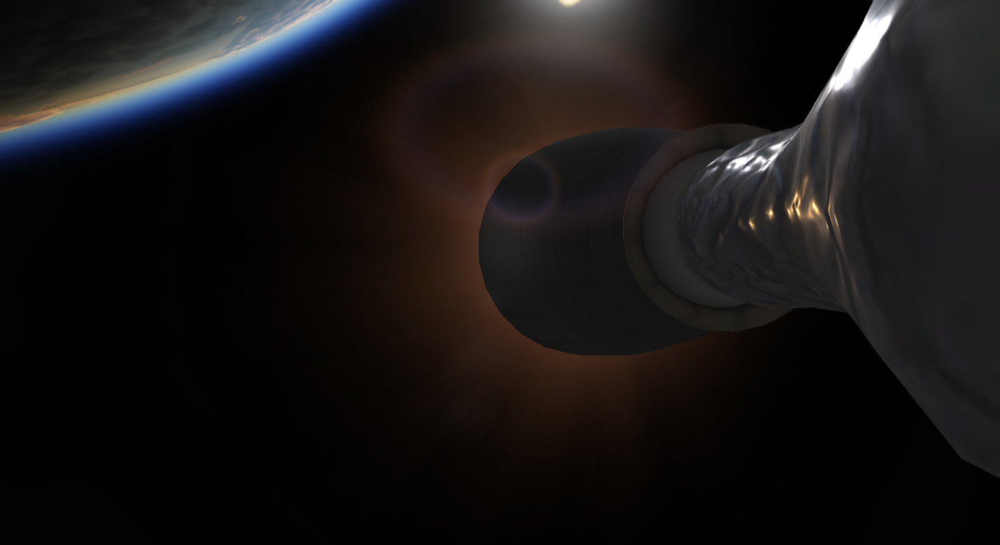

Polaris Dawn
Vehículo: Falcon 9 Block 5 • Crew Dragon
Cliente: SNIPE X
Fecha: 16 de julio de 2025
Estado: Éxito

Introducción
Polaris Dawn, desarrollada para el cliente SNIPE X, representa un ambicioso paso en la exploración espacial privada. Con una tripulación completamente compuesta por civiles altamente entrenados, esta primera misión del programa Polaris busca alcanzar una órbita de 100 km a 97.6° de inclinación. La misión incluye pruebas pioneras de comunicación láser, experimentos científicos y una potencial actividad extravehicular comercial sin precedentes.
Detalles Técnicos
- Vehículo: Falcon 9 Block 5 • Crew Dragon
- Altura del cohete: 70 m
- Tripulación: Manolo Kerman, Paco Kerman, Isco Kerman, Asier Kerman
- Órbita: 100 km a 97.6° de inclinación (LEO)
- Cliente: SNIPE X
- Propulsor: B1057.1
- Recuperación: N/A.
Conclusión
La misión Polaris Dawn es un ejemplo claro de la creciente participación de clientes privados como SNIPE X en el desarrollo de misiones tripuladas de alta complejidad. Halcon Space se posiciona como un socio clave en esta nueva era del acceso comercial al espacio, combinando innovación tecnológica con una visión ambiciosa del futuro espacial. Los datos y experiencias de esta misión sentarán las bases para futuras operaciones más extensas y sostenibles.
Imágenes de la misión


